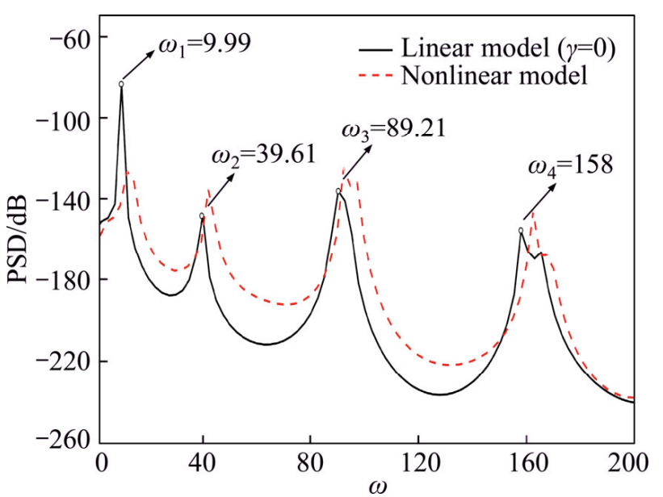

Parametric modeling of carbon nanotubes and estimating nonlocal constant using simulated vibration signals-ARMA and ANN based approach
Journal of Central South University, 25, pp.461-472, 2018. Journal Article

Abstract
Nonlocal continuum mechanics is a popular growing theory for investigating the dynamic behavior of Carbon nanotubes (CNTs). Estimating the nonlocal constant is a crucial step in mathematical modeling of CNTs vibration behavior based on this theory. Accordingly, in this study a vibration-based nonlocal parameter estimation technique, which can be competitive because of its lower instrumentation and data analysis costs, is proposed. To this end, the nonlocal models of the CNT by using the linear and nonlinear theories are established. Then, time response of the CNT to impulsive force is derived by solving the governing equations numerically. By using these time responses the parametric model of the CNT is constructed via the autoregressive moving average (ARMA) method. The appropriate ARMA parameters, which are chosen by an introduced feature reduction technique, are considered features to identify the value of the nonlocal constant. In this regard, a multi-layer perceptron (MLP) network has been trained to construct the complex relation between the ARMA parameters and the nonlocal constant. After training the MLP, based on the assumed linear and nonlinear models, the ability of the proposed method is evaluated and it is shown that the nonlocal parameter can be estimated with high accuracy in the presence/absence of nonlinearity.